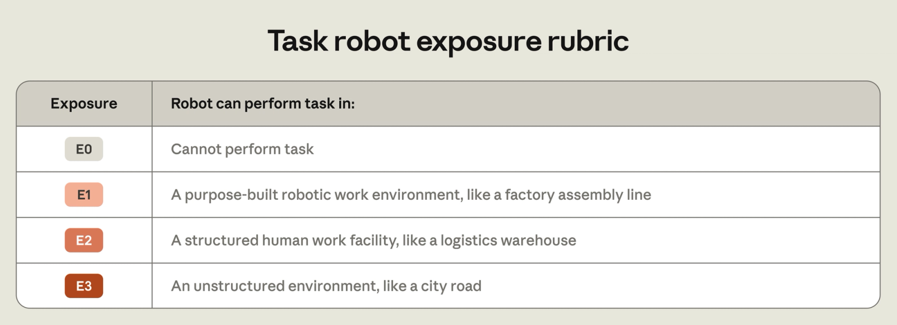
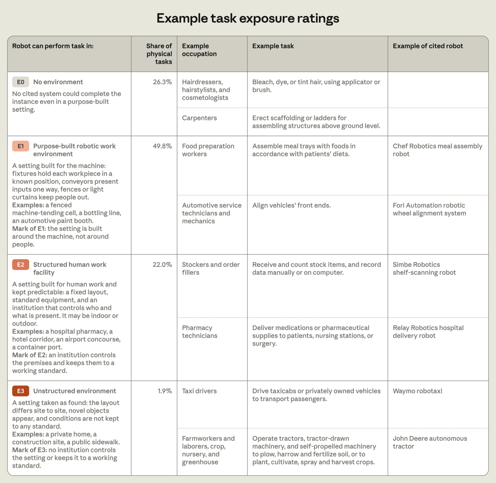
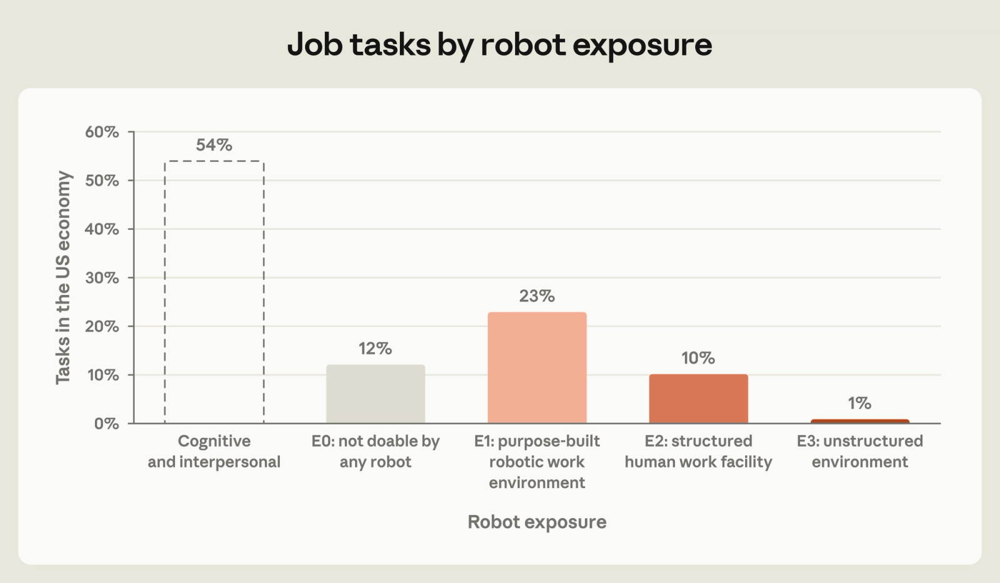
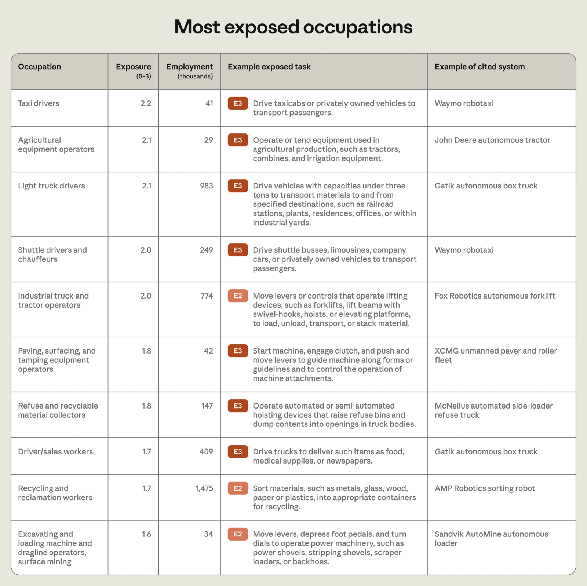
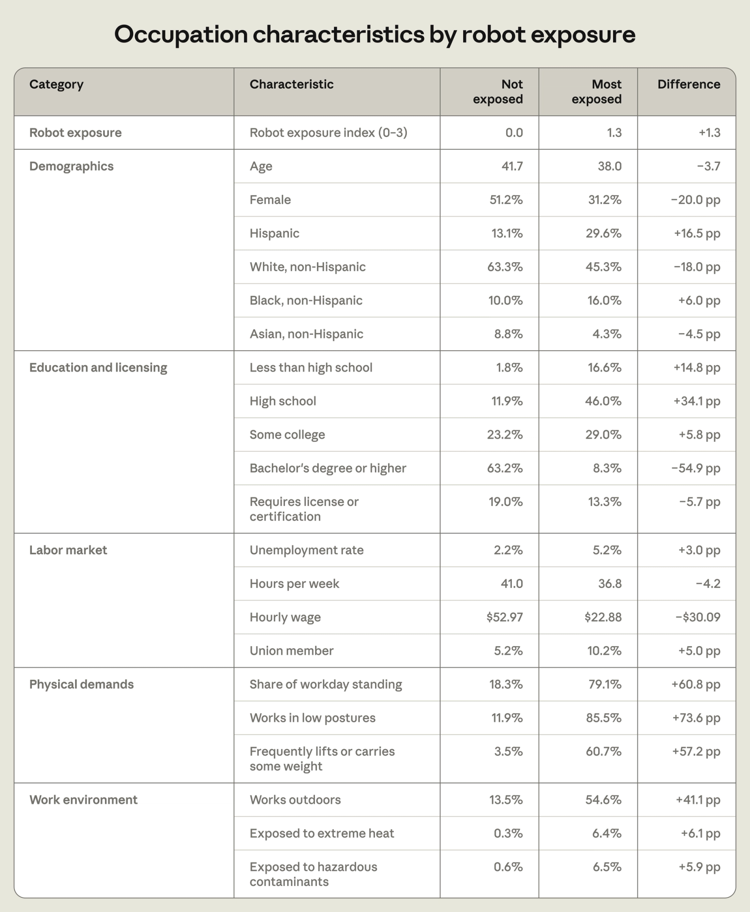
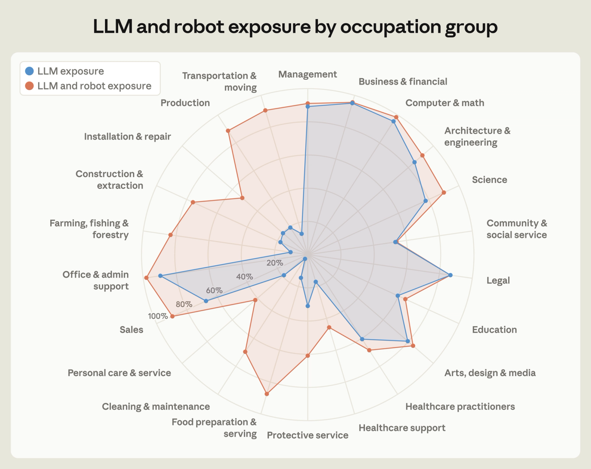
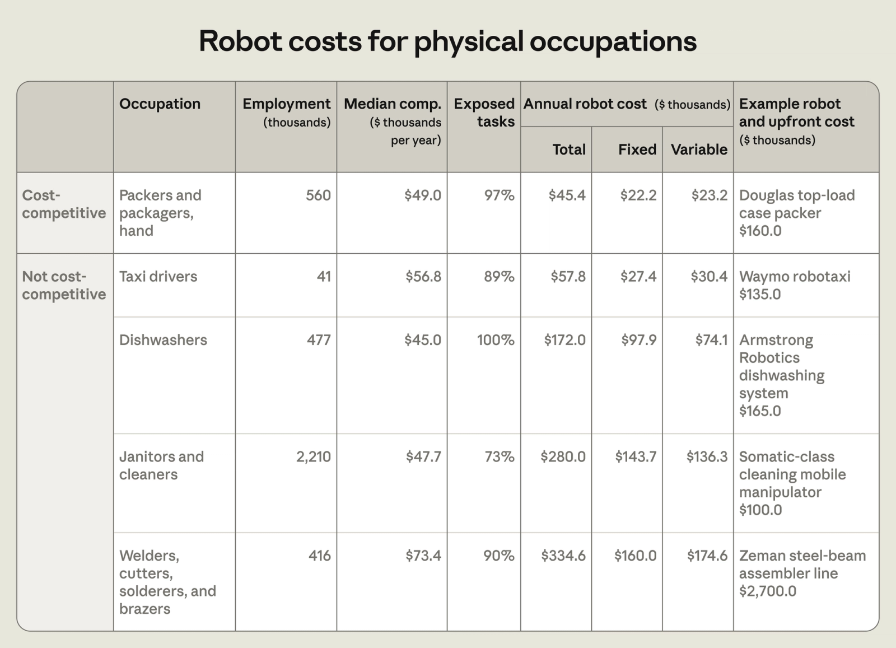
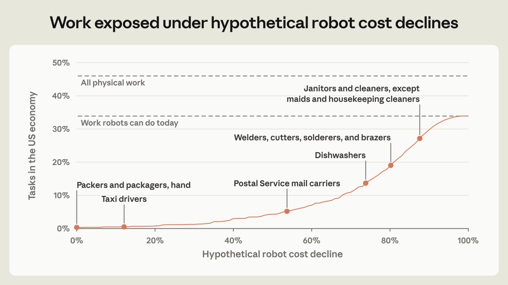

Key findings
- We present a robot exposure index based on how well robots can perform job tasks today.
- Robots, which we define as autonomous physical machines that sense and act, can perform three-quarters of physical tasks in the US, making up 34% of working hours, but mostly in limited settings. Workers exposed to robots are more likely to be male, less educated, and lower paid. For example, driving and warehouse jobs are highly exposed to currently available robots; nursing and general repair jobs are not, since present-day robots can do little of their work even in highly controlled environments.
- Overall, about 80% of job tasks by working time are exposed to either robots or LLMs. Robots do work where LLMs cannot. The remaining unexposed work is highly interpersonal or requires physical skills that robots today don’t have.
- While robots can do most physical work tasks today, they are much more expensive than human labor. Robots are cost-competitive for just 0.3% of job tasks. If robot price declines follow past trends, it will take 40 years for that share to reach 10%. Beyond price, factors including capabilities, preferences, and regulations pose further barriers to robot automation.
- Over the past 50 years, jobs more exposed to robots experienced greater declines in wages and employment than others. At the same time, job exposure has grown: each year, robots have become able to do about 2% of the physical work they previously couldn’t.
Introduction
Advances in large language models have raised the possibility of automating large swaths of work. But many jobs are physical. AI’s impact on the economy will in part depend on robotics.¹
Predicting the pace of robot advances is difficult, but enumerating capabilities today, we argue, can give insight into the coming years. We develop a measure of job exposure to robots, using Claude to assess how well present-day robots can perform work tasks. A job is more exposed when robots can do more of its tasks in less controlled environments. A robot is cost-competitive when it can do the same task for cheaper than a human worker.
We find that robots can already perform 74% of physical tasks in the US, making up 34% of working hours. Robots and LLMs together expose all but one-fifth of employment.
But we also find significant barriers to adoption: most robots require highly structured environments, and are cost-competitive with people for just 0.3% of work. If robot price declines follow past trends, it will take 40 years for that share to reach just 10%. After cost, the main barrier is capability, such as the dexterity needed to untangle wires. Human preferences and regulations further limit robot adoption for a significant share of tasks.
Our core premise is that jobs are more likely to be impacted when robots can already do their work today. A backtest across 50 years validates this approach: from 1977 to today, jobs that were more exposed to existing robots experienced wage and employment declines in later decades.
If the past is any guide, taxi drivers and warehouse packers will see changes sooner than nurses and mechanics. We expect that physical work will first be automated where robots have a foothold today.
Robots today and tomorrow
Most robots today operate in controlled environments like factories. Robots usually need to be programmed to interact with the physical world, whereas humans can adapt to their work environments. This has been a major hurdle for commercially viable robots.² But AI helps robots interpret and respond to their surroundings, allowing warehouse robots and autonomous vehicles to operate alongside humans.³
Many observers expect AI to improve robot capabilities quickly.⁴ Although spending on robots remains about 1% of total US equipment investment, business surveys suggest US robot adoption could nearly double within three years.⁵ And firms are investing billions to develop AI-powered robots that match human physical abilities.⁶
It’s difficult to predict exactly how these efforts will affect jobs and productivity. A ranking of occupations by current robot task coverage suggests where the impacts will appear first. Robots should affect jobs that they can already do before jobs they could do only with new technology and, in some cases, accommodating regulations. Current capabilities are also concrete and measurable, while forecasts of future capabilities must bet on which technologies will succeed.⁷ Robots still in development support our focus on current exposure: firms are testing humanoids in car factories and warehouses, structured environments where robots are already common.⁸
Measuring exposure
Our analyses use data from O*NET, a database of around 900 occupations linked with descriptions of around 19,000 job tasks. We identify a set of physical job tasks that we think could not be automated without robots. To do so, we have Claude score task descriptions on a rubric measuring physical, cognitive, and interpersonal work requirements.⁹ The task “Dig trenches” is physical; so is “Teach dance students,” though this also requires cognitive and interpersonal skills. While typists use their hands to “Compute and verify totals on report forms, requisitions, or bills, using adding machine or calculator,” this task doesn’t count. Appendix A gives details, and Appendix F lists our prompts.
Our task-level measure of robot exposure asks: can a robot today perform this task, and if so under what circumstances? We take robots to mean autonomous physical machines that sense and act, which includes car washes that scan cars to adjust sprayers and excludes teleoperated surgical machines fully controlled by a surgeon.¹⁰ We measure degrees of exposure by the kind of work environment a robot needs to perform a task.¹¹
Specifically, we sort tasks into four tiers of increasing exposure by where a robot can perform each task:
- E0: Robot cannot perform task.
- E1: Robot can perform task in a purpose-built robotic work environment, like a factory assembly line.
- E2: Robot can perform task in a structured human work facility, like a logistics warehouse.
- E3: Robot can perform task in an unstructured environment, like a city road.
Figure 1 also displays this rubric.

We think environmental control is a good measure of near-term automation risk. Because it’s hard for robots to adapt to unpredictable environments, most deployed robots work in engineered environments, like those that spray paint cars on assembly lines. While these difficulties are thought to have slowed physical automation in the past, AI-powered robots could better adapt to their environments.¹²
To determine exposure, we instruct Claude to search for specific robots relevant to each task and assess their capabilities and operating environments, quoting sources directly. We ask whether a robot could perform a task in versions of that task’s typical work environment that are more or less structured. Getting robots to do seemingly simple tasks like loading a dishwasher requires many complex physical skills, so only demonstrated robot capabilities count.¹³ Robots must also do a task similarly well to humans, factoring in reliability, error rates, and speed.
For instance, self-driving cars couldn’t “Drive taxicabs or privately owned vehicles to transport passengers” on real roads in the early 2010s. But they did drive around mock towns built for testing, a step toward today’s autonomous vehicles.¹⁴ Our rubric would rate driving passengers at exposure level E1 at that time (robot can perform task in a purpose-built robotic work environment) and E3 today (in an unstructured environment).¹⁵
This rubric requires many judgment calls. The O*NET task statements are often terse, and omit details that may be easy for humans but hard for robots.¹⁶ To describe work more concretely, we elicit detailed examples of how tasks are performed today, and how often these occur. Claude then scores exposure for these examples using web search to gauge robot capabilities. Cited sources must show robot deployments, commercial sales, or demonstrations, and results are similar if we omit ratings relying on demonstrations. Task exposure is set by majority rule: the least structured environment in which robots can do at least half of a task’s examples, weighted by time.¹⁷
Consider the task “Dig trenches.” We first ask Claude to provide examples describing how workers perform this task today and how often. For example, Claude estimates that 25% of the time, this task requires “cutting a linear trench in open ground.” Another 20% of the time, it requires “careful digging by hand around existing buried pipes, flowlines, cables and conduit.” These activities require different sorts of physical abilities, like navigation and strength (linear trenches) compared to fine motor dexterity and perception (digging by hand around pipes).
Claude rates the first example at exposure E3, citing a control system that retrofits hydraulic excavators to autonomously dig trenches.¹⁸ Robots today can’t carefully dig around buried pipes, so the latter example is unexposed at E0. More examples for “Dig trenches” resemble careful digging than linear trenching, so overall this task is unexposed in our ratings.
Figure 2 gives examples of task ratings, along with fuller descriptions of each exposure tier from our exposure prompt and a robot cited to support each rating. We also calculate the share of physical tasks in each tier: here and throughout, each task is weighted by the number of workers who do it, and by the fraction of working time they spend on it, which we estimate with Claude.¹⁹

Tasks that robots can’t do (E0) make up about a quarter of physical tasks by estimated working time. These tasks require physical skills that are hard for robots, like fine motor dexterity for “Bleach, dye, or tint hair, using applicator or brush” and strength, balance, and mobility for “Erect scaffolding or ladders for assembling structures above ground level.”
Robots can do half of physical tasks in purpose-built environments but not in wider settings (E1). Food prep robots pack ready-to-eat meals on conveyor belts, and new models with AI can adjust to different ingredients, portions, and trays, so the task “Assemble meal trays with foods in accordance with patients’ diets” is rated E1.
Another 22% of physical tasks can be done by robots in structured human workplaces (E2). Hospital delivery robots, for example, “Deliver medications or pharmaceutical supplies to patients, nursing stations, or surgery.” Today’s robots do only 2% of physical tasks in unstructured environments (E3). These often involve driving, done by autonomous cars, tractors, and other vehicles.²⁰
Our accompanying data release contains Claude’s reasoning and cited sources for all rated tasks. For example, Claude rates the task “Weld components in flat, vertical, or overhead positions” E1, and quotes an article about AI-powered robot welders: “Path Robotics said both of its welding cells can autonomously weld steel parts and are deployed in fabrication shops across the U.S. and Canada.”²¹
We define a robot exposure index for jobs that averages a job’s task exposure ratings on a 0–3 scale. This index rises with the share of exposed tasks and robot capabilities on those tasks, weighting tasks by estimated working time.
An ideal exposure index would perfectly predict robot automation in the coming years. Since we can’t look forward in time, we instead try to validate our measure using historical data on jobs and task descriptions. We rate robot exposure in several years since 1977, and link exposure to changes in wages and employment. When a job was more exposed to robots, its wages and employment fell in later decades, even after accounting for industry trends and other potential confounders. These results, detailed in Appendix B, give us some confidence that our measure can predict future job disruption.
What work can robots do?
Figure 3 summarizes robot exposure across all job tasks in the US economy, weighting tasks by the estimated fraction of time spent per task for an occupation and that occupation’s employment. Cognitive and interpersonal work makes up 54% of tasks by working time. The remaining 46% of tasks are physical. As a share of all tasks, around 12% cannot be done by any robot today (E0), 23% can be done by robots in specially built environments (E1), 10% in structured human workplaces (E2), and 1% in unstructured environments (E3). Counting any exposure level, 74% of physical work, or 34% of all work, can be done by robots in some circumstances.

Robots can do physical tasks in many parts of the economy. Autonomous mobile warehouse robots drive to loading docks and inside trailers. They use suction cups to grab packages and load them onto mobile conveyor belts.²² Since these robots navigate structured human workplaces, many warehousing tasks are rated E2, like “Move freight, stock, or other materials to and from storage or production areas, loading docks, delivery vehicles, ships, or containers, by hand or using trucks, tractors, or other equipment.” Advances in navigation and handling have made robots like these common in logistics and transportation.²³
Figure 4 shows the 10 most exposed occupations by our robot exposure index. Of these 10 occupations, 9 are vehicle operators. Robots cited for driving jobs include autonomous cars, tractors, trucks, and pavers. Taxi drivers lead exposure with an index of 2.2.²⁴ Since driving is most of the job, their median task by working time is exposed at E3, while auxiliary tasks like “Vacuum and clean interiors and wash and polish exteriors of automobiles” are doable by robots but in more structured settings than open roads. Autonomous vehicles have yet to upend driving jobs at scale, but their capabilities suggest that these jobs are at higher risk of automation than others.²⁵

An occupation can cover many work settings. In the US, robots may only operate in some of these settings, while robots abroad sometimes cover all of them. For example, stockers and order fillers do the task “Stock shelves, racks, cases, bins, and tables with new or transferred merchandise” in retail stores and in warehouses. In US warehouses, AI-powered robots with touch sensors pick and stow merchandise.²⁶ In US retail, mobile robots scan for empty shelves, but must alert humans to restock them.²⁷ Robots in Japanese convenience stores restock fridges themselves.²⁸ Since stocker robots require items to be brought near them, this task is rated E1. We estimate that stockers spend 70% of their time on tasks rated E1 like this one, and another 16% on tasks rated E2. In total, they score 1.0 on the robot exposure index.
Jobs can be exposed to robots if many of their tasks are moderately exposed, or if some of their most time-intensive tasks are highly exposed. Compare tapers, who finish drywall and whose exposure index is 1.6, with recycling and reclamation workers, who sort recycling and whose exposure index is 1.7.
Tasks for tapers are split between unexposed and highly exposed. Workers building interior walls use paper tape and a paste called mud to smooth over seams, joints, and screws in drywall sheets. Mud and tape are messy materials, so robots cannot perform the task “Press paper tape over joints to embed tape into sealing compound and to seal joints.” After the first tape coat dries, workers “Apply additional coats to fill in holes and make surfaces smooth.” This task is rated E3: an autonomous drywall robot uses AI to scan walls, spray additional coats of sealant, and sand walls once dry.²⁹ Overall, by work time, 41% of tapers’ tasks are exposed at E3, while robots cannot do another 26%.
In contrast, for recycling and reclamation workers, robots can perform over three-quarters of tasks by work time at level E2. Only 8% of their work time is unexposed. For example, robots with computer vision and suction grippers can do the task “Sort materials, such as metals, glass, wood, paper or plastics, into appropriate containers for recycling.”³⁰ These robots stand in for workers picking recycling from conveyor belts, so this and other tasks are rated E2.
Robots are highly capable at specific tasks for tapers, while for recycling workers exposure is broader, but robots are less adaptable. Messy tasks for tapers may bottleneck automation. It’s also possible that the largest recycling facilities use robots early, while smaller facilities adopt them later. Either way, robots seem likely to change both jobs if widely deployed.
Characteristics of exposed jobs
Having established our exposure measure, we now consider what exposure might imply for the labor market.
Figure 5 compares workers in the top quintile of the robot exposure index with unexposed workers, who make up another 20% or so of jobs. Data from the 2020–2024 American Community Survey show that highly exposed workers are 20 percentage points less likely to be female and 16 percentage points more likely to be Hispanic. These workers are also 55 percentage points less likely to hold a bachelor’s degree or higher, earn around $30 less per hour, and face an unemployment rate more than twice as high.³¹
Occupational requirement statistics compiled by the Bureau of Labor Statistics also show that robot-exposed jobs are much more likely to require carrying weight and working in extreme heat or near hazardous contaminants. This exposure pattern is in many ways the opposite of what’s typically found for LLMs.³²

Robot and LLM exposure
We next analyze whether robots broaden job disruption risks beyond those from LLMs alone. Drawing on Eloundou et al. (2024) and Massenkoff and McCrory (2026), we compare two occupation exposure measures:
- LLM exposure: the share of job tasks for which an LLM could halve required time (called theoretical capability in our prior work).
- LLM and robot exposure: the share of job tasks exposed to either LLMs or robots, taking the higher of LLM exposure and E1+ robot exposure for each task.
Robot and LLM exposure ratings measure somewhat different concepts, but both indicate that technology could do much of a given task. While integrating LLMs and robots in actual jobs may present new challenges or enable new capabilities, these two measures provide initial insight into job exposure based on today’s capabilities.
Figure 6 plots job exposure to LLMs alone (in blue) and to LLMs and robots (in orange), grouped by broad occupation category. Robots expose more and different kinds of jobs than LLMs alone. While less than 15% of transportation & moving tasks are exposed to LLMs alone, about 90% of these tasks are exposed with robots. Similarly, robots raise exposure in office & admin support jobs, which largely involve computer work and light physical tasks, to nearly 100%. Overall, around half of work is exposed to LLMs alone, but that rises to 81% when considering robots.

What work can’t LLMs and robots do today? Consider personal care & service jobs, for which around 40% of tasks are exposed. In-person social interaction and physical contact with humans, which both LLMs and robots struggle with, are important for these jobs. This example suggests that highly interpersonal work, or work requiring delicate manipulation, may be less susceptible to near-term automation.³³ Occupation groups like installation & repair, healthcare support, and community & social service fit this pattern too, with relatively low exposure. While LLMs and robots can’t perform these tasks today, no occupation group overall is less than 40% exposed. And advances in technology may make possible new kinds of automation over time.
Unexposed tasks also help describe what could make work hard to automate. We group unexposed task statements that share similar text, and ask Claude to describe these (Appendix C.1). Tasks not exposed to LLMs or robots today tend to be hands-on and face-to-face, and are sometimes regulated. Healthcare tasks often combine these features, like “Administer medications to patients and monitor patients for reactions or side effects.”
In Appendix C.2, we study which barriers may most prevent the automation of physical tasks. We ask Claude which barriers today would prevent robots from doing a significant share of each physical task, exposed or not, if unresolved. We group these into four categories: capabilities, human preferences, regulation, and cost. For tasks limited by capabilities, we have Claude pick the most important missing skill from manipulation, planning and reasoning, mobility and strength, and perception.
We find that capabilities and costs are the biggest impediments to robot adoption. Capabilities prevent adoption for around 70% of physical tasks. Manipulation capabilities stand out: half of physical tasks wouldn’t be automated at scale unless robots become more adept at touching and handling objects. Shortcomings in planning and reasoning skills, which AI seems most likely to improve, limit robot automation for 8% of physical tasks. For nearly all tasks, costs would also need to fall.
Our estimates indicate that today’s regulations wouldn’t allow robots to perform 14% of physical tasks. Regulation matters for tasks in healthcare, protective service, and education, but less so for those in food preparation, cleaning, production, construction, repair, and material moving, which make up about half of physical work. Human preferences hold back robots for a quarter of tasks. That may be because people wouldn’t trust a robot (to “Dress children and change diapers”) or because they value social interaction (to “Greet guests, escort them to their seats, and present them with menus and wine lists”).
If robot capabilities develop quickly, what do these results imply? Around 30% of physical tasks are limited either by preferences or by regulation. That would leave most physical work exposed if robots became capable and cost-effective, though the rest may become weak links that drag down aggregate productivity speedups. Uneven progress in capabilities could also slow adoption, if robots became smarter but still couldn’t handle objects like humans. That said, better robots could also reduce resistance to automation, for example by assuaging safety concerns. We turn next to robot costs, the most common barrier in these estimates.
Robot costs and adoption
Though robots can perform most physical work today, it may not be economical for them to do so. Robots made with pricey hardware aren’t as easily copied and distributed as software or LLMs. Compared to LLM exposure measures that assess capabilities but not costs, it’s especially important to distinguish jobs exposed to cost-competitive robots.³⁴
For every exposed task, we estimate the annual cost for robots to perform this task based on the specific robots cited in our task exposure measures. We prompt Claude to estimate costs using web search and the list of robots cited for each task. Automating an E1-exposed task could require redesigning workplaces to suit robots, while robots that do E3 tasks may use expensive sensors to navigate unstructured environments.
Estimates cover the full cost of deploying a robot to perform each task.³⁵ To make robot and labor costs comparable, we first ask Claude to estimate how much a human worker typically produces on a task in a year. Bakers who “Roll, knead, cut, or shape dough,” for example, produce an estimated 180,000 shaped pieces per year. Claude then estimates what it would cost a robot to produce the same output. Because bakers do this task in different environments, Claude averages robot deployment costs across retail, mid-scale, and industrial bakeries. Fixed costs are annualized to reflect hardware lifespans and the time value of money.
Calculated this way, costs for robots to do a task can be compared to worker pay. We say a task is exposed to cost-competitive robots if its robot cost is less than its labor cost, calculated as the occupation’s total compensation from the BLS scaled by the fraction of time spent on this task.³⁶ Standard economic models predict that these tasks are automated, though given adoption frictions and cost uncertainties this measure is more suggestive.³⁷ See Appendix D.1 for details and a worked example of robot task costs.
Robots often perform multiple job tasks, but we estimate costs for individual tasks in an occupation. Simply adding up task costs may double count robots or undercount coordination costs in real deployments. We aggregate by occupation, providing Claude with task cost estimates and asking for a total cost, net of redundancies and new additions. We say that an occupation is exposed to cost-competitive robots if this total robot cost is less than its total compensation scaled by the fraction of time spent on tasks that robots can do.³⁸
Figure 7 shows five highly physical jobs and cost estimates for robots to perform their exposed tasks. Packers and packagers are the largest occupation exposed to cost-competitive robots. Several robots are needed to do packers and packagers’ tasks, including those that pack containers, move materials around warehouses, visually inspect goods, erect cardboard boxes, print and apply labels, and seal packages.³⁹ These robots are estimated to cost over $2 million to purchase and install, but replace the yearly work of around 14 workers. Fixed costs are spread over a roughly 10-year service life at an 8% cost of capital. Operating expenses, such as maintenance, part-time human supervision, and energy, bring annual costs to around $45,000 to replace one human worker per year. Since packers and packagers spend 97% of their time on tasks that robots can do and cost around $49,000, robots cost about $2,500 less per year to do that work.

The US currently employs around 560,000 packers and packagers. Firms face adoption frictions, like regulation or borrowing limits, and these cost estimates are approximate. For example, robotaxis are estimated to cost only around $7,000 more than taxi drivers, but face regulatory hurdles.⁴⁰ That said, automation risks are likely higher for physical jobs that cost-competitive robots can do. Employment for packers and packagers has fallen 22% since 2015. And the BLS projects this occupation will shed the 11th-most jobs of any occupation by 2035, behind only correctional officers and 9 sales and office occupations.⁴¹
For the other jobs shown in Figure 7, robots cost much more than humans even though they can do much of the work. In metalworking, robots with cameras and AI can weld autonomously.⁴² But human welders perform many tasks that enable welding, like positioning large metal parts, climbing ladders to weld hard-to-reach joints, checking quality, and grinding and finishing materials. Automating this work requires robots that together cost around five times more than human welders.
Dishwashers, along with janitors and cleaners, are paid $25,000 to $30,000 less than welders. But their robot analogs are still several times more expensive. Cleaning is hard to standardize and streamline, and robot cleaners are often slower than humans and limited to specific tasks.⁴³
Figure 8 summarizes robot costs by plotting exposure to cost-competitive robots at hypothetical, uniform declines in robot costs. For example, if robots cost 20% less today, they would be cost-competitive for the physical work done by 2.8 million workers. These workers spend on average 42% of their time on work exposed to robots, 0.8% of all working time in the economy. For reference, industry and government data suggest that robot prices have declined roughly 3% per year since the 1990s. At this rate, it would take around seven years to reach a 20% cost decline. Appendix E discusses historical robot price data in more detail.
Though robots can theoretically do tasks that add up to 34% of all work time, they are cost-competitive for just 0.3% today. Still, that includes roughly 300,000 workers for whom robots can do 95% of their tasks.⁴⁴ As Figure 7 suggested, robots today are cost-competitive or close to it for packers and packagers and taxi drivers, but far from it for most other jobs.
For robots to be cost-competitive for 10% of human work today, costs would need to decline about 70%. At a 3% decline per year, that would take around 40 years. That said, it’s possible that new, more capable robots like humanoids or new manufacturing processes will drive down costs to automate human work. Reports suggest that global production could scale quickly if there were intense demand for humanoids and other robots.⁴⁵

Cost parity between humans and robots also needn’t imply high unemployment or rapid economic growth. Tasks that workers still perform may become bottlenecks, and these robot cost estimates often include human supervisory, exception-handling, or repair work. As emphasized by Acemoglu and Restrepo (2019) and Jones and Tonetti (2026), automation boosts productivity only after machines are much cheaper than humans, rather than at cost parity.
We apply these cost estimates in two extensions. Appendix D.2 calculates an alternative occupation exposure measure that factors in both what robots can do and how cheaply they can do it. Accounting for cost produces a very similar ranking of jobs compared to our main, capabilities-focused measure (0.95 rank correlation).
Appendix E also presents stylized scenarios for robot adoption if robots become cheaper and more productive. The scenarios draw on episodes of innovation and adoption for industrial robots since the 1990s, as well as analyst forecasts for humanoids. We hold fixed tasks and wages and ask how soon historical rates of cost declines and capability gains would make robots cost-competitive.
To model how robots take on new work over time, we rate exposure for 1977 job tasks using today’s robots, and compare with robot exposure as of 1977. In 1977, robots could not do 62% of physical tasks. Today’s robots can do all but 24% of those same tasks. Over time, that means each year robots became able to do 2% of the tasks they previously could not (see Appendix B.4).
Adding in 3% cost declines per year, robots aren’t cost-competitive for half of physical work today until 2085. But rapid advances in robotics may speed up these timelines. In a fast adoption scenario, where quality-adjusted costs fall up to four times faster and robots become able to do new tasks twice as fast, robots become cost-competitive for half of physical work by 2050. Automating 90% of physical work today still takes 53 years.
One caveat is that our scenarios apply the same cost decline or capability increase to every task, so tasks become cost-competitive at today’s ranking of costs relative to worker pay. That ranking captures broad economic incentives, but robotics companies may also target certain capabilities first for other reasons. Humanoid demonstrations sometimes showcase household chores, for example, while robot makers may prioritize factory work useful to their own operations, much as AI companies prioritized coding agents.⁴⁶
Overall, robots would need to sustain record rates of price declines and quality improvements over the coming decades to enable rapid physical automation. Even so, job impacts are less certain with these cost projections, since they set aside forces like preferences and regulation as well as feedback effects like falling wages.
Discussion
We introduce a new measure of job exposure to robots. A job is exposed when robots can perform its tasks. Robots that work like humans count more toward exposure than those that require rebuilding the workplace, like factory robots.
We find that driving jobs are most exposed, due to autonomous vehicles. Most robots today aren’t like driverless cars, and only operate in controlled environments. But robots could perform most physical work in some capacity, though they are several times more expensive than humans for the same jobs. Jobs exposed to robots are quite different from those exposed to LLMs. They pay less, and are more physically demanding.
We hope these measures help analyze physical automation as AI expands what robots can do. Exposure patterns today may inform which jobs more capable robots will disrupt tomorrow. And periodic updates to this work can track robot capabilities.
Our exposure scale is predicated on the idea that jobs are more at risk when today’s robots already do them in some settings. We find that this way of assessing robots predicts historical labor market impacts. But AI-powered robots could leapfrog our scale and do work they cannot today, for example by learning to climb ladders or use their arms and grippers more deftly.
Much remains uncertain about how robots and AI could reshape the economy. Growth forecasts for AI often assume that physical bottlenecks, which robots could loosen, will drag down gains from automating cognitive work. We also have not considered how AI could affect physical work without robots, for example by better predicting when factory machines need maintenance. In the nearer term, efforts to track AI’s impacts could watch exposed occupations, like drivers and warehouse packers, for early signs of disruption. Further out, a key question is how work itself will change, perhaps becoming more social and interpersonal as robots and AI advance.
Appendix
Available here.
Authors
Russell Legate-Yang and Maxim Massenkoff.
Acknowledgments
James Akl, Tess Cotter, Sholto Douglas, Adam Farina, Megan Giacobetti, Ryan Heller, Johannes Hermle, Zoë Hitzig, Ben Jones, Chad Jones, Anton Korinek, Jan Leike, Eva Lyubich, Peter McCrory, Kerry Persen, Sarah Pollack, Santi Ruiz, Szymon Sacher, Monika Tuchowska, Zhengdong Wang, Heather Whitney, Nathan Wilmers, Kim Withee.
Citation
Please cite this as:
@online{legateyang2026robots,
author = {Legate-Yang, Russell and Massenkoff, Maxim},
title = {What work can robots do?},
date = {2026-09-30},
year = {2026},
url = {https://www.anthropic.com/research/what-work-can-robots-do}
}References
Abraham, Katharine G. and James R. Spletzer, "Are the New Jobs Good Jobs?," in Katharine G. Abraham, James R. Spletzer, and Michael J. Harper, eds., Labor in the New Economy, University of Chicago Press, 2010, 101-143.
Acemoglu, Daron and David Autor, "Skills, Tasks and Technologies: Implications for Employment and Earnings," in Handbook of Labor Economics, Vol. 4B, Elsevier, 2011, 1043-1171.
Acemoglu, Daron, David Autor, David Dorn, Gordon H. Hanson, and Brendan Price, "Import Competition and the Great US Employment Sag of the 2000s," Journal of Labor Economics, 2016, 34 (S1), S141-S198.
Acemoglu, Daron, Andrea Manera, and Pascual Restrepo, "Does the US Tax Code Favor Automation?," Brookings Papers on Economic Activity, Spring 2020, 231-300.
Acemoglu, Daron and Pascual Restrepo, "The Race between Man and Machine: Implications of Technology for Growth, Factor Shares, and Employment," American Economic Review, 2018, 108 (6), 1488-1542.
Acemoglu, Daron and Pascual Restrepo, "Automation and New Tasks: How Technology Displaces and Reinstates Labor," Journal of Economic Perspectives, 2019, 33 (2), 3-30.
Acemoglu, Daron and Pascual Restrepo, "Robots and Jobs: Evidence from US Labor Markets," Journal of Political Economy, 2020, 128 (6), 2188-2244.
Acemoglu, Daron and Pascual Restrepo, "Tasks, Automation, and the Rise in U.S. Wage Inequality," Econometrica, 2022, 90 (5), 1973-2016.
Agaskar, Ameya, Sriram Siva, William Pickering, Kyle O'Brien, Charles Kekeh, Alexandre Ormiga Galvao Barbosa, Ang Li, Brianna Gallo Sarker, Alicia Chua, Mayur Nemade, Charun Thattai, Jiaming Di, Isaac Iyengar, Ramya Dharoor, Dino Kirouani, Jimmy Erskine, Tamir Hegazy, Scott Niekum, Usman A. Khan, Federico Pecora, and Joseph W. Durham, "DeepFleet: Multi-Agent Foundation Models for Mobile Robots," arXiv:2508.08574, 2025.
Aghion, Philippe, Benjamin F. Jones, and Charles I. Jones, "Artificial Intelligence and Economic Growth," in Ajay Agrawal, Joshua Gans, and Avi Goldfarb, eds., The Economics of Artificial Intelligence: An Agenda, University of Chicago Press, 2019, 237-282.
Airbus, "Airbus Concludes ATTOL with Fully Autonomous Flight Tests," press release, June 29, 2020. https://www.airbus.com/en/newsroom/press-releases/2020-06-airbus-concludes-attol-with-fully-autonomous-flight-tests
Airbus, "Airbus Tests New Technologies to Enhance Pilot Assistance," press release, January 12, 2023. https://www.airbus.com/en/newsroom/press-releases/2023-01-airbus-tests-new-technologies-to-enhance-pilot-assistance
Amazon, "Introducing Vulcan: Amazon's First Robot with a Sense of Touch," About Amazon, May 7, 2025. https://www.aboutamazon.com/news/operations/amazon-vulcan-robot-pick-stow-touch
Andreassen, Dag, "A Robotic Success from Jæren," The Norwegian Museum of Science and Technology, September 3, 2024. https://www.tekniskmuseum.no/en/stories/a-robotic-success-from-the-fighter
Andrychowicz, Marcin, Bowen Baker, Maciek Chociej, Rafal Józefowicz, Bob McGrew, Jakub Pachocki, Arthur Petron, Matthias Plappert, Glenn Powell, Alex Ray, Jonas Schneider, Szymon Sidor, Josh Tobin, Peter Welinder, Lilian Weng, and Wojciech Zaremba, "Learning Dexterous In-Hand Manipulation," International Journal of Robotics Research, 2020, 39 (1), 3-20.
Arantes, Ana P., Nadja Bressan, Ludymila R. Borges, and Chris A. McGibbon, "Evaluation of a Novel Real-Time Adaptive Assist-as-Needed Controller for Robot-Assisted Upper Extremity Rehabilitation Following Stroke," PLOS ONE, 2023, 18 (10), e0292627.
Atalay, Enghin, Phai Phongthiengtham, Sebastian Sotelo, and Daniel Tannenbaum, "The Evolution of Work in the United States," American Economic Journal: Applied Economics, 2020, 12 (2), 1-34.
Autor, David H., "Why Are There Still So Many Jobs? The History and Future of Workplace Automation," Journal of Economic Perspectives, 2015, 29 (3), 3-30.
Autor, David, Caroline Chin, Anna Salomons, and Bryan Seegmiller, "New Frontiers: The Origins and Content of New Work, 1940-2018," Quarterly Journal of Economics, 2024, 139 (3), 1399-1465.
Autor, David H. and David Dorn, "The Growth of Low-Skill Service Jobs and the Polarization of the US Labor Market," American Economic Review, 2013, 103 (5), 1553-1597.
Autor, David H., David Dorn, and Gordon H. Hanson, "The China Syndrome: Local Labor Market Effects of Import Competition in the United States," American Economic Review, 2013, 103 (6), 2121-2168.
Autor, David H., Lawrence F. Katz, and Alan B. Krueger, "Computing Inequality: Have Computers Changed the Labor Market?," Quarterly Journal of Economics, 1998, 113 (4), 1169-1213.
Autor, David H., Frank Levy, and Richard J. Murnane, "The Skill Content of Recent Technological Change: An Empirical Exploration," Quarterly Journal of Economics, 2003, 118 (4), 1279-1333.
Autor, David, David Mindell, and Elisabeth Reynolds, "The Work of the Future: Building Better Jobs in an Age of Intelligent Machines," MIT Task Force on the Work of the Future, 2020.
Autor, David H. and Neil Thompson, "Expertise," Journal of the European Economic Association, 2025, 23 (4), 1203-1271.
Badger Technologies, "Badger Technologies and Stop & Shop Stores Upgrade Marty the Robot at 300+ Locations to Improve Customer Shopping Experiences," press release, September 18, 2023. https://www.badger-technologies.com/news/press-releases/stop-and-shop-upgrade-marty-the-robot.html
Bank of America, "Humanoid Robots 101," BofA Global Research, April 29, 2025.
Bank of Japan, "Producer Price Index, 2020 Base: Robots [PRCG20_2201350029]," Time-Series Data Search, 2026. https://www.stat-search.boj.or.jp/
Baptista, Eduardo, Ju-min Park, and Laurie Chen, "Robots Poised for 'ChatGPT Moment,' Unitree CEO Says," Reuters, August 20, 2026. https://www.reuters.com/world/asia-pacific/robots-poised-chatgpt-moment-unitree-ceo-says-2026-08-20/
Billard, Aude and Danica Kragic, "Trends and Challenges in Robot Manipulation," Science, 2019, 364 (6446), eaat8414.
Binder, Damon, "AGI Will Set Off an Industrial Explosion," AI Frontiers, August 11, 2026. https://ai-frontiers.org/articles/agi-will-set-off-an-industrial-explosion
Bishop, Todd, "Amazon Tops 1 Million Robots: Here's What They Do," GeekWire, July 1, 2025. https://www.geekwire.com/2025/amazons-robot-workforce-hits-1-million-heres-what-they-all-do/
BMW Group, "BMW Group Advances the Use of Physical AI in Production with Figure 03 Project in Spartanburg," press release, June 25, 2026. https://www.press.bmwgroup.com/global/article/detail/T0458778EN/bmw-group-advances-the-use-of-physical-ai-in-production-with-figure-03-project-in-spartanburg?language=en
Boston Consulting Group, "The Robotics Revolution: The Next Great Leap in Manufacturing," report, September 2015. https://www.bcg.com/publications/2015/lean-manufacturing-innovation-robotics-revolution-next-great-leap-manufacturing
Boston Dynamics, "Stretch," product page, 2026. https://bostondynamics.com/products/stretch/
Brooks, Rodney, "Why Today's Humanoids Won't Learn Dexterity," rodneybrooks.com, September 26, 2025. https://rodneybrooks.com/why-todays-humanoids-wont-learn-dexterity/
Built Robotics, "The World's First Fully Autonomous Trenching Solution," Exosystem product page, 2026. https://www.builtrobotics.com/solutions/trenching
Canvas, "Drywall Finishing Robot," product page, JLG Industries, 2026. https://www.jlg.com/en/canvas
Cazzaniga, Mauro, Florence Jaumotte, Longji Li, Giovanni Melina, Augustus J. Panton, Carlo Pizzinelli, Emma J. Rockall, and Marina Mendes Tavares, "Gen-AI: Artificial Intelligence and the Future of Work," IMF Staff Discussion Note SDN/2024/001, 2024.
Chaparro-Rico, Betsy D. M., Daniele Cafolla, Paolo Tortola, and Giuseppe Galardi, "Assessing Stiffness, Joint Torque and ROM for Paretic and Non-Paretic Lower Limbs during the Subacute Phase of Stroke Using Lokomat Tools," Applied Sciences, 2020, 10 (18), 6168.
Chen, Jiafeng and Jonathan Roth, "Logs with Zeros? Some Problems and Solutions," Quarterly Journal of Economics, 2024, 139 (2), 891-936.
Cleveland Clinic, "da Vinci Robotic Surgery," Health Library, last updated April 29, 2025. https://my.clevelandclinic.org/health/treatments/16908-da-vinci-surgery
Cockburn, Iain M., Rebecca Henderson, and Scott Stern, "The Impact of Artificial Intelligence on Innovation: An Exploratory Analysis," in Ajay Agrawal, Joshua Gans, and Avi Goldfarb, eds., The Economics of Artificial Intelligence: An Agenda, University of Chicago Press, 2019, 115-146.
Code of Federal Regulations, "Composition of Flight Crew," 14 CFR 121.385, retrieved September 21, 2026. https://www.ecfr.gov/current/title-14/section-121.385
CORDIS, "Automated System for Packaging Fresh Meat with Reduced Waste/Giveaway, Processing Time, Human Involvement and Contamination (AUTOMEATIC)," European Commission, grant agreement 775913, periodic reporting summary, 2018. https://cordis.europa.eu/project/id/775913
Counterpoint Research, "Global Humanoid Robot Shipments Soar Nearly 300% YoY in H1 2026, Driven by Commercial Deployments," August 20, 2026. https://counterpointresearch.com/en/insights/global-humanoid-robot-shipments-soar-nearly-300-percent-yoy-in-h1-2026
Davidson, Tom and Rose Hadshar, "The Industrial Explosion," Forethought Research, May 2025. https://www.forethought.org/research/the-industrial-explosion
Davidson, Tom, Basil Halperin, Thomas Houlden, and Anton Korinek, "When Does Automating Research Produce Explosive Growth?," EconTAI Working Paper, January 2026. https://www.econtai.org/research/AutomatingAIResearch.pdf
Deming, David J., "The Growing Importance of Social Skills in the Labor Market," Quarterly Journal of Economics, 2017, 132 (4), 1593-1640.
Denain, Jean-Stanislas and Yann Rivière, "How Fast Could Robot Production Scale Up?," Epoch AI, April 2026. https://epoch.ai/publications/how-fast-could-robot-production-scale-up
Drankhan, Holly, "Developments in Robotic Teat Sprayers Cut Costs and Labor," Progressive Dairy, September 30, 2016. https://www.agproud.com/articles/28362-developments-in-robotic-teat-sprayers-cut-costs-and-labor
Dürr Group, "See and Drive Perfectly with x-light and x-wheel," duerrmore magazine, November 13, 2018. https://www.durr-group.com/en/duerrmore/2019/autonomous-driving/x-light-and-x-wheel
Eloundou, Tyna, Sam Manning, Pamela Mishkin, and Daniel Rock, "GPTs are GPTs: Labor Market Impact Potential of LLMs," Science, 2024, 384 (6702), 1306-1308.
Epiroc, "Autonomous Material Handling: A Crucial Step Toward the Mine of the Future," customer story, April 17, 2024. https://www.epiroc.com/en-me/customer-stories/2024/autonomous-material-handling-a-crucial-step-toward-the-mine-of-the-future
Ewing, Jack, "Robots That Walk and Talk Are Coming to Car Factories," The New York Times, August 11, 2026. https://www.nytimes.com/2026/08/11/business/humanoid-robots-car-factories.html
Fabrico, "Maintenance Cost as Percent of RAV: The Benchmark That Cuts Through Excuses," blog, June 26, 2026. https://www.fabrico.io/blog/maintenance-cost-as-percent-of-rav/
Federal Aviation Administration (FAA), "Safety Framework for Aircraft Automation," September 2025. https://www.faa.gov/aircraft/air_cert/step/safety_framework_aircraft_automation
Fine, Sidney A., "A Structure of Worker Functions," Personnel and Guidance Journal, 1955, 34 (2), 66-73.
Fine, Sidney A. and Wretha W. Wiley, An Introduction to Functional Job Analysis, Kalamazoo, MI: W.E. Upjohn Institute for Employment Research, 1971.
Firoozi, Roya, Johnathan Tucker, Stephen Tian, Anirudha Majumdar, Jiankai Sun, Weiyu Liu, Yuke Zhu, Shuran Song, Ashish Kapoor, Karol Hausman, Brian Ichter, Danny Driess, Jiajun Wu, Cewu Lu, and Mac Schwager, "Foundation Models in Robotics: Applications, Challenges, and the Future," International Journal of Robotics Research, 2025, 44 (5), 701-739.
Fori Automation, "Toe Tool Systems," product page, 2025. https://foriauto.com/our-products/end-of-line/alignment-systems/wheel-alignment-systems/toe-tool-systems
Frey, Carl Benedikt and Michael A. Osborne, "The Future of Employment: How Susceptible Are Jobs to Computerisation?," Technological Forecasting and Social Change, 2017, 114, 254-280.
Friedel, William C., Jr., Thomas S. Bettencourt, and Daniel L. Freeman, "Tomato Harvesting Employing Electronic Sorting," U.S. Patent 4,033,099, issued July 5, 1977. https://patents.google.com/patent/US4033099A/en
Friedel, William C., Jr. and Charles F. Dietz, "Tomato Harvesting Sorting System," U.S. Patent 4,118,311, issued October 3, 1978. https://patents.google.com/patent/US4118311A/en
Goldman, Sharon, "A Year Ago, Nvidia's Jensen Huang Said the 'ChatGPT Moment' for Robotics Was Around the Corner. Now He Says It's 'Nearly Here.' But Is It?," Fortune, January 6, 2026. https://fortune.com/2026/01/06/nvidia-jensen-huang-chatgpt-moment-for-robotics/
González Huarte, Javier, Maite Ortiz de Zarate, and Aitor Ibarguren, "CAD-Based Robot Programming Solution for Wire Harness Manufacturing in Aeronautic Sector," Robotics, 2023, 12 (5), 130.
Graetz, Georg and Guy Michaels, "Robots at Work," Review of Economics and Statistics, 2018, 100 (5), 753-768.
Gridwise, "How Are Robotaxis Affecting Driver Pay in AV Cities?," blog, August 2025. https://gridwise.io/blog/how-are-robotaxis-affecting-driver-pay-in-av-cities
Hirsch, Barry T., David A. Macpherson, and William E. Even, "Union Membership, Coverage, and Earnings from the CPS" [dataset], Unionstats.com, 2026. https://unionstats.com/
Honerkamp, Paxton, "Within Uber-Waymo Split, a Key Labor Battle over AVs Is Being Waged in the Nation's Capital," CNBC, August 1, 2026. https://www.cnbc.com/2026/08/01/uber-waymo-autonomous-vehicle-regulation.html
Huffman, Wallace E., "The Status of Labor-Saving Mechanization in U.S. Fruit and Vegetable Harvesting," Choices, 2012, 27 (2). https://www.choicesmagazine.org/choices-magazine/theme-articles/immigration-and-agriculture/the-status-of-labor-saving-mechanization-in-us-fruit-and-vegetable-harvesting
Humlum, Anders, "Robot Adoption and Labor Market Dynamics," Rockwool Foundation Research Unit Study Paper 175, 2021.
Hwang, Jyh-Jing, Runsheng Xu, Hubert Lin, Wei-Chih Hung, Jingwei Ji, Kristy Choi, Di Huang, Tong He, Paul Covington, Benjamin Sapp, Yin Zhou, James Guo, Dragomir Anguelov, and Mingxing Tan, "EMMA: End-to-End Multimodal Model for Autonomous Driving," Transactions on Machine Learning Research, 2025.
Ibarz, Julian, Jie Tan, Chelsea Finn, Mrinal Kalakrishnan, Peter Pastor, and Sergey Levine, "How to Train Your Robot with Deep Reinforcement Learning: Lessons We Have Learned," International Journal of Robotics Research, 2021, 40 (4-5), 698-721.
Ingenia, "Fruit-Picking Robots," Issue 93, December 2022. https://www.ingenia.org.uk/articles/fruit-picking-robots/
International Organization for Standardization (ISO), "Robotics — Vocabulary," ISO 8373:2021, Geneva, 2021.
Jarrett, Cosette, "12 Cool Facts About the AI-Powered Robots That Help Deliver Your Amazon Packages," About Amazon, December 11, 2023. https://www.aboutamazon.com/news/operations/amazon-robotics-cool-facts
Jones, Charles I. and Christopher Tonetti, "Past Automation and Future A.I.: How Weak Links Tame the Growth Explosion," working paper, Stanford University, 2026. https://web.stanford.edu/~chadj/JonesTonetti_Automation.pdf
Jurkat, Anne, Rainer Klump, and Florian Schneider, "Tracking the Rise of Robots: A Survey of the IFR Database and its Applications," MPRA Paper 111812, Munich Personal RePEc Archive, October 2021. https://mpra.ub.uni-muenchen.de/111812/
Katz, Lawrence F. and Kevin M. Murphy, "Changes in Relative Wages, 1963-1987: Supply and Demand Factors," Quarterly Journal of Economics, 1992, 107 (1), 35-78.
Kawasaki Robotics, "At the Forefront of FRP Automation: Spray-Up and Cutting Process Innovations Pioneered by KADO × IEC," case study, 2026. https://kawasakirobotics.com/case-studies/at-the-forefront-of-frp-automation-spray-up-and-cutting-process-innovations-pioneered-by-kado-x-iec/
Kemp, Charles C., Aaron Edsinger, and Eduardo Torres-Jara, "Challenges for Robot Manipulation in Human Environments," IEEE Robotics & Automation Magazine, 2007, 14 (1), 20-29.
Kim, Moo Jin, Karl Pertsch, Siddharth Karamcheti, Ted Xiao, Ashwin Balakrishna, Suraj Nair, Rafael Rafailov, Ethan P. Foster, Pannag R. Sanketi, Quan Vuong, Thomas Kollar, Benjamin Burchfiel, Russ Tedrake, Dorsa Sadigh, Sergey Levine, Percy Liang, and Chelsea Finn, "OpenVLA: An Open-Source Vision-Language-Action Model," in Proceedings of the 8th Conference on Robot Learning (CoRL 2024), Proceedings of Machine Learning Research, 2025, 270, 2679-2713.
Kober, Jens, J. Andrew Bagnell, and Jan Peters, "Reinforcement Learning in Robotics: A Survey," International Journal of Robotics Research, 2013, 32 (11), 1238-1274.
Kogan, Leonid, Dimitris Papanikolaou, Lawrence D. W. Schmidt, and Bryan Seegmiller, "Technology and Labor Displacement: Evidence from Linking Patents with Worker-Level Data," NBER Working Paper 31846, 2023.
Kroemer, Oliver, Scott Niekum, and George Konidaris, "A Review of Robot Learning for Manipulation: Challenges, Representations, and Algorithms," Journal of Machine Learning Research, 2021, 22 (30), 1-82.
Link, Albert N., Zachary T. Oliver, and Alan C. O'Connor, "Economic Analysis of Technology Infrastructure Needs for Advanced Manufacturing: Advanced Robotics and Automation," NIST GCR 16-005, National Institute of Standards and Technology, August 2016. https://doi.org/10.6028/NIST.GCR.16-005
Lise, Jeremy and Fabien Postel-Vinay, "Multidimensional Skills, Sorting, and Human Capital Accumulation," American Economic Review, 2020, 110 (8), 2328-2376.
Ludwig, Jens, Sendhil Mullainathan, and Ashesh Rambachan, "Large Language Models: An Applied Econometric Framework," NBER Working Paper 33344, 2025.
Lung, Natalie, "New York's Robotaxi Plan Pulled in Setback to Waymo Expansion," Bloomberg News, February 19, 2026. https://www.bloomberg.com/news/articles/2026-02-19/new-york-s-robotaxi-plan-pulled-in-setback-to-waymo-expansion
Madrigal, Alexis C., "Inside Waymo's Secret World for Training Self-Driving Cars," The Atlantic, August 23, 2017. https://www.theatlantic.com/technology/archive/2017/08/inside-waymos-secret-testing-and-simulation-facilities/537648/
Mason, Matthew T., "Toward Robotic Manipulation," Annual Review of Control, Robotics, and Autonomous Systems, 2018, 1, 1-28.
Massenkoff, Maxim and Peter McCrory, "Labor Market Impacts of AI: A New Measure and Early Evidence," Anthropic, March 5, 2026. https://www.anthropic.com/research/labor-market-impacts
Mayekawa, "Deboning Machines," product page, 2026a. https://mayekawa.com/products/deboning_machines/
Mayekawa, "Reducing Workloads with Reliable Deboning Technology and Stabilizing Production to Meet Market Demands for Pork," With Mayekawa, 2026b (undated; retrieved September 29, 2026). https://mayekawa.com/with/stories/hamdas/
McKinsey & Company, "The Future of Robotics: Intelligent, Adaptable, and on Your Team," The Next Normal, 2026. https://www.mckinsey.com/featured-insights/the-next-normal/robotics
Metzger, Jean-Claude, Olivier Lambercy, Antonella Califfi, Daria Dinacci, Claudio Petrillo, Paolo Rossi, Fabio M. Conti, and Roger Gassert, "Assessment-Driven Selection and Adaptation of Exercise Difficulty in Robot-Assisted Therapy: A Pilot Study with a Hand Rehabilitation Robot," Journal of NeuroEngineering and Rehabilitation, 2014, 11, 154.
Moravec, Hans, Mind Children: The Future of Robot and Human Intelligence, Cambridge, MA: Harvard University Press, 1988.
Morgan Stanley, "Humanoid Robot Market Expected to Reach $5 Trillion by 2050," May 14, 2025. https://www.morganstanley.com/insights/articles/humanoid-robot-market-5-trillion-by-2050
Morgan Stanley Research, "Humanoids: Investment Implications of Embodied AI," report, June 26, 2024.
Navas-Reascos, Gabriel E., David Romero, Johan Stahre, and Alberto Caballero-Ruiz, "Wire Harness Assembly Process Supported by Collaborative Robots: Literature Review and Call for R&D," Robotics, 2022, 11 (3), 65.
Nissyoku Shimbun, "前川製作所が豚もも肉脱骨ロボット「ハムダス」発売" [Mayekawa Launches HAMDAS Pork Ham Deboning Robot], Nihon Shokuryo Shimbun, September 14, 1998. https://news.nissyoku.co.jp/news/nss-8423-0032
Oitzman, Mike, "Pharm Robotics Advances Automated Dairy Cow Healthcare," The Robot Report, July 13, 2025. https://www.therobotreport.com/pharm-robotics-advances-automated-dairy-cow-healthcare/
Oxmaint, "Food Manufacturing Maintenance Budgeting: Planning, Benchmarks, and Cost Control," March 28, 2026. https://oxmaint.com/industries/food-manufacturing/food-manufacturing-maintenance-budgeting-benchmarks-cost-control
Pallottino, Lucia, "Robotics for Warehouses and Logistics: Technologies, Challenges, and Future Directions," Annual Review of Control, Robotics, and Autonomous Systems, 2026, 9, 377-401.
Polanyi, Michael, The Tacit Dimension, Garden City, NY: Doubleday, 1966.
Pumacay, Wilbert, Ishika Singh, Jiafei Duan, Ranjay Krishna, Jesse Thomason, and Dieter Fox, "THE COLOSSEUM: A Benchmark for Evaluating Generalization for Robotic Manipulation," arXiv:2402.08191, 2024.
Reuters, "Meet SwagBot, the AI-Powered Robot Cattle Herder Preventing Soil Degradation," Rappler, December 12, 2024. https://www.rappler.com/technology/innovations/swagbot-artificial-intelligence-powered-robot-cattle-herder/
Rivière, Yann and Jean-Stanislas Denain, "Where Autonomy Works: Evaluating Robot Capabilities in 2026," Epoch AI, 2026. https://epoch.ai/publications/where-autonomy-works-evaluating-robot-capabilities-in-2026
Robbins, Jacob, "Apptronik Raises $520M as VC Funding for Humanoid Robotics Explodes 300%," PitchBook News, February 11, 2026. https://pitchbook.com/news/articles/apptronik-raises-520m-as-vc-funding-for-humanoid-robotics-explodes-300
The Robot Report, "Path Robotics Raises $100M to Automate Welding," October 28, 2024. https://www.therobotreport.com/path-robotics-raises-100m-to-automate-welding/
The Robot Report, "Okibo Opens New Jersey HQ and Launches EG7 Robot in U.S. Market," April 11, 2025. https://www.therobotreport.com/okibo-opens-new-jersey-hq-and-launches-eg7-robot-in-u-s-market/
Rosen, C. A., "Machine Vision and Robotics: Industrial Requirements," in George G. Dodd and Lothar Rossol, eds., Computer Vision and Sensor-Based Robots, Springer, 1979, 3-22.
SAE International, "Taxonomy and Definitions for Terms Related to Driving Automation Systems for On-Road Motor Vehicles," SAE Recommended Practice J3016_202104, April 2021.
Sandvik, "Sandvik Introduces AutoMine AutoLoad 2.0 for Improved Autonomous Bucket Loading," press release, June 14, 2023. https://www.mining.sandvik/en/news-and-media/news-archive/2023/06/sandvik-introduces-automine-autoload-2.0-for-improved-autonomous-bucket-loading
Schenck RoTec, "Wheel Assembly Lines: Individual & Complete Solutions," product page, 2025. https://www.schenck-rotec.com/en-us/product/wheel-assembly-lines/
Scoop, "‘Golden Opportunity’ for Scott Technology with Silver Fern Farms," Scott Technology announcement, September 14, 2022. https://www.scoop.co.nz/stories/BU2209/S00201/golden-opportunity-for-scott-technology-with-silver-fern-farms.htm
Simbe Robotics, "Tally," product page, 2026. https://www.simberobotics.com/store-intelligence/tally
Statista, "Average Retail Electricity Price for Industrial Consumers in the United States from 1970 to 2025," April 28, 2026. https://www.statista.com/statistics/190680/us-industrial-consumer-price-estimates-for-retail-electricity-since-1970/
Suresh, Sudharshan, Haozhi Qi, Tingfan Wu, Taosha Fan, Luis Pineda, Mike Lambeta, Jitendra Malik, Mrinal Kalakrishnan, Roberto Calandra, Michael Kaess, Joseph Ortiz, and Mustafa Mukadam, "NeuralFeels with Neural Fields: Visuotactile Perception for In-Hand Manipulation," Science Robotics, 2024, 9 (96), eadl0628.
Svanberg, Maja, Wensu Li, Martin Fleming, Brian Goehring, and Neil Thompson, "Beyond AI Exposure: Which Tasks Are Cost-Effective to Automate with Computer Vision?," MIT FutureTech working paper, January 2024. https://futuretech.mit.edu/publication/beyond-ai-exposure-which-tasks-are-cost-effective-to-automate-with-computer-vision
Tamkin, Alex, Miles McCain, Kunal Handa, Esin Durmus, Liane Lovitt, Ankur Rathi, Saffron Huang, Alfred Mountfield, Jerry Hong, Stuart Ritchie, Michael Stern, Brian Clarke, Landon Goldberg, Theodore R. Sumers, Jared Mueller, William McEachen, Wes Mitchell, Shan Carter, Jack Clark, Jared Kaplan, and Deep Ganguli, "Clio: Privacy-Preserving Insights into Real-World AI Use," arXiv:2412.13678, 2024.
Tamkin, Alex and Peter McCrory, "Estimating AI Productivity Gains from Claude Conversations," Anthropic, 2025. https://www.anthropic.com/research/estimating-productivity-gains
Tedrake, Russ, Robotic Manipulation: Perception, Planning, and Control, course notes for MIT 6.421, 2026. http://manipulation.mit.edu
Telexistence, "Telexistence to Begin Installing AI Robot 'TX SCARA' in 300 FamilyMart Stores," press release, August 10, 2022. https://tx-inc.com/en/blog/2022/08/10/11737/
Thomas, Charlotte, "Rise of the Robots," METSTRADE, October 23, 2023. https://www.metstrade.com/news/superyacht/rise-of-the-robots
Trammell, Philip and Anton Korinek, "Economic Growth Under Transformative AI," Annual Review of Economics, 2026, 18, 589-611.
Transformation Hub Wiring Harness, "Robotics Challenge 2026," 2026. https://www.leitungssatz-hub.de/en/robotik-challenge/robotik-challenge-2026/
UBS, "Is the World Ready for 1bn Robots?," UBS Global Research Q-Series, June 17, 2025.
University of Michigan, "U-M Opens Mcity Test Environment for Connected and Driverless Vehicles," Michigan Engineering News, July 20, 2015. https://news.engin.umich.edu/2015/07/u-m-opens-mcity-test-environment-for-connected-and-driverless-vehicles/
U.S. Bureau of Economic Analysis (BEA), "Price Indexes for Private Fixed Investment in Equipment by Type: Computers and Peripheral Equipment [B935RG3A086NBEA]," NIPA Table 5.5.4, retrieved from FRED, Federal Reserve Bank of St. Louis, 2026. https://fred.stlouisfed.org/series/B935RG3A086NBEA
U.S. Bureau of Labor Statistics (BLS), "A New Methodology for Estimating Hours Worked for U.S. Labor Productivity Measurement," Office of Productivity and Technology technical note, November 3, 2022. https://www.bls.gov/productivity/technical-notes/labor-productivity-hours-worked-method-using-ces-all-employee-hours-nov-2022.htm
U.S. Bureau of Labor Statistics (BLS), "Occupational Employment and Wage Statistics (OEWS): May 2025 National Occupational Employment and Wage Estimates," 2025. https://www.bls.gov/oes/tables.htm
U.S. Bureau of Labor Statistics (BLS), "Consumer Price Index for All Urban Consumers: New Vehicles, U.S. City Average, Not Seasonally Adjusted [CUUR0000SETA01]," 2026a. https://www.bls.gov/cpi/
U.S. Bureau of Labor Statistics (BLS), "Employment Level - Agriculture and Related Industries [LNS12034560] and Employment Level [CE16OV]," Current Population Survey, retrieved from FRED, Federal Reserve Bank of St. Louis, 2026b. https://fred.stlouisfed.org/series/LNS12034560
U.S. Bureau of Labor Statistics (BLS), "Occupational Employment and Wage Statistics: Frequently Asked Questions," 2026c, retrieved September 21, 2026. https://www.bls.gov/oes/oes_ques.htm
U.S. Census Bureau, "Annual Capital Expenditures Survey: Robotic Equipment Expenditures, 2019-2022," 2024. https://www.census.gov/programs-surveys/aces.html
U.S. Department of Transportation Office of Inspector General, "Enhanced FAA Oversight Could Reduce Hazards Associated with Increased Use of Flight Deck Automation," Audit Report AV-2016-013, January 7, 2016. https://www.oig.dot.gov/sites/default/files/FAA%20Flight%20Decek%20Automation_Final%20Report%5E1-7-16.pdf
Vitiello, V., K.-W. Kwok, and G.-Z. Yang, "Introduction to Robot-Assisted Minimally Invasive Surgery (MIS)," in Paula Gomes, ed., Medical Robotics: Minimally Invasive Surgery, Woodhead Publishing, 2012, 1-40.
Wallace, Neal, "Butcher Bot Pays Off in Dollars per Carcase," Farmers Weekly (New Zealand), September 30, 2022. https://www.farmersweekly.co.nz/technology/butcher-bot-pays-off-in-dollars-per-carcase/
Wallace, Neal, "One Giant LEAP for Robo Meatworks," Farmers Weekly (New Zealand), April 22, 2024. https://www.farmersweekly.co.nz/technology/one-giant-leap-for-robo-meatworks/
Wang, Hanchen, Tianfan Fu, Yuanqi Du, Wenhao Gao, Kexin Huang, Ziming Liu, Payal Chandak, Shengchao Liu, Peter Van Katwyk, Andreea Deac, Anima Anandkumar, Karianne Bergen, Carla P. Gomes, Shirley Ho, Pushmeet Kohli, Joan Lasenby, Jure Leskovec, Tie-Yan Liu, Arjun Manrai, Debora Marks, Bharath Ramsundar, Le Song, Jimeng Sun, Jian Tang, Petar Veličković, Max Welling, Linfeng Zhang, Connor W. Coley, Yoshua Bengio, and Marinka Zitnik, "Scientific Discovery in the Age of Artificial Intelligence," Nature, 2023, 620, 47-60.
Waste360, "Q&A: AMP's Matanya Horowitz on Bringing AI to the Recycling World and How the Tech Is Advancing," November 2023. https://www.waste360.com/waste-recycling/q-a-amp-s-matanya-horowitz-on-bringing-ai-to-the-recycling-and-how-the-tech-is-advancing
WATTAgNet, "The New Generation of Automated Deboning Machines," October 1, 2018. https://www.wattagnet.com/broilers-turkeys/processing-slaughter/article/15526256/the-new-generation-of-automated-deboning-machines-wattagnet
Webb, Michael, "The Impact of Artificial Intelligence on the Labor Market," working paper, Stanford University, 2020.
Wessling, Brianna, "With New Funding, Monumental Plans to Bring Its Construction Robots to the U.S.," The Robot Report, July 17, 2026. https://www.therobotreport.com/with-new-funding-monumental-plans-bring-construction-robots-u-s/
Wishart-Smith, Heather, "Built Robotics Unveils Autonomous Pile Driving Robot, Expediting Solar Rollout," Forbes, March 20, 2023. https://www.forbes.com/sites/heatherwishartsmith/2023/03/20/built-robotics-unveils-autonomous-pile-driving-robot-expediting-solar-rollout/
Yotzov, Ivan, Jose Maria Barrero, Nicholas Bloom, Philip Bunn, Steven J. Davis, Kevin M. Foster, Aaron Jalca, Brent H. Meyer, Paul Mizen, Michael A. Navarrete, Pawel Smietanka, Gregory Thwaites, and Ben Zhe Wang, "Firm Data on AI," NBER Working Paper 34836, 2026. https://doi.org/10.3386/w34836
Yu, Zhen, Jingyu Wang, Ting Zuo, James Alm, Xun Li, and Xue Li, "Robotaxis Reduce Taxi Drivers' Income," Humanities and Social Sciences Communications, 2026, 13, article 629.
Zeira, Joseph, "Workers, Machines, and Economic Growth," Quarterly Journal of Economics, 1998, 113 (4), 1091-1117.
Ziemerink, Jan, "How to Manage Automatic Calf Feeders Successfully," Förster-Technik North America presentation, Vita Plus, 2018. https://www.vitaplus.com/wp-content/uploads/2018/06/Successfull-Calfraising_with-Auto-feeders2018_2.pdf
Data sources
Althobaiti, Shahad, Ahmad Alabdulkareem, Judy Hanwen Shen, Iyad Rahwan, Morgan Frank, Esteban Moro, and Alex Rutherford. "Dictionary of Titles" [dataset]. Harvard Dataverse, 2022. https://doi.org/10.7910/DVN/DQW8IP
Autor, David, Caroline Chin, Anna Salomons, and Bryan Seegmiller. Replication Data for: "New Frontiers: The Origins and Content of New Work, 1940-2018." Harvard Dataverse, V1.1, 2024. https://doi.org/10.7910/DVN/7RYD2E, retrieved July 30-31, 2026.
Autor, David H. and David Dorn. 2013. "The Growth of Low-Skill Service Jobs and the Polarization of the US Labor Market." American Economic Review 103 (5): 1553-1597. Occupation crosswalks (occ1990dd) and offshorability measure: https://www.ddorn.net/data.htm.
Bank of Japan. Producer Price Index, 2020 Base: Robots [PRCG20_2201350029]. Time-Series Data Search, retrieved September 16, 2026. https://www.stat-search.boj.or.jp/
Eloundou, Tyna, Sam Manning, Pamela Mishkin, and Daniel Rock. 2024. "GPTs are GPTs: Labor Market Impact Potential of LLMs." Science 384 (6702): 1306-1308. Task-level exposure labels: https://github.com/openai/GPTs-are-GPTs.
Hirsch, Barry T., David A. Macpherson, and William E. Even. Union Membership, Coverage, and Earnings from the CPS [dataset]. Unionstats.com, 2026. https://unionstats.com/. Described in Hirsch, Barry T. and David A. Macpherson. 2003. "Union Membership and Coverage Database from the Current Population Survey: Note." Industrial and Labor Relations Review 56 (2): 349-354.
National Academy of Sciences, Committee on Occupational Classification and Analysis. Dictionary of Occupational Titles (DOT): Part I - Current Population Survey, April 1971, Augmented With DOT Characteristics, and Part II - Fourth Edition Dictionary of DOT Scores for 1970 Census Categories. Ann Arbor, MI: Inter-university Consortium for Political and Social Research [distributor], 2006-09-06. https://doi.org/10.3886/ICPSR07845.v2
National Center for O*NET Development. O*NET Database, versions 29.3 (2025), 13.0 (2008), and 4.0 (2002); the O*NET-SOC taxonomy crosswalks; and the DOT to O*NET-SOC 2019 Crosswalk. Washington, DC: U.S. Department of Labor, Employment and Training Administration. https://www.onetcenter.org/database.html; https://www.onetcenter.org/taxonomy.html; https://www.onetcenter.org/crosswalks/dot/
Ruggles, Steven, Sarah Flood, Matthew Sobek, Daniel Backman, Grace Cooper, Julia A. Rivera Drew, Stephanie Richards, Renae Rodgers, Jonathan Schroeder, and Kari C.W. Williams. IPUMS USA: Version 16.0 [dataset]. Minneapolis, MN: IPUMS, 2025. https://doi.org/10.18128/D010.V16.0
U.S. Bureau of Economic Analysis (BEA). Personal Consumption Expenditures: Chain-type Price Index [PCEPI], retrieved from FRED, Federal Reserve Bank of St. Louis. https://fred.stlouisfed.org/series/PCEPI, September 21, 2026.
U.S. Bureau of Economic Analysis (BEA). Table 5.5.4. Price Indexes for Private Fixed Investment in Equipment by Type: Computers and peripheral equipment [B935RG3A086NBEA], retrieved from FRED, Federal Reserve Bank of St. Louis. https://fred.stlouisfed.org/series/B935RG3A086NBEA, September 16, 2026.
U.S. Bureau of Labor Statistics (BLS). Consumer Price Index for All Urban Consumers, U.S. city average, not seasonally adjusted: New vehicles [CUUR0000SETA01]. Washington, DC: U.S. Department of Labor. Retrieved September 16, 2026. https://www.bls.gov/cpi/
U.S. Bureau of Labor Statistics (BLS). Employer Costs for Employee Compensation (ECEC), 2004-2023 and March 2026. Washington, DC: U.S. Department of Labor. https://www.bls.gov/ecec/
U.S. Bureau of Labor Statistics (BLS). Employment Projections, 2025-35: Table 1.6, Occupations with the Largest Job Declines. Washington, DC: U.S. Department of Labor, August 27, 2026. https://www.bls.gov/emp/tables/occupations-largest-job-declines.htm
U.S. Bureau of Labor Statistics (BLS). Occupational Employment and Wage Statistics (OEWS): 2002, May 2008, May 2015, and May 2025 National Occupational Employment and Wage Estimates. Washington, DC: U.S. Department of Labor. https://www.bls.gov/oes/tables.htm
U.S. Bureau of Labor Statistics (BLS). Occupational Requirements Survey (ORS), 2023 and 2025. Washington, DC: U.S. Department of Labor. https://www.bls.gov/ors/
U.S. Census Bureau. 2018 Census Occupation Code List with Crosswalk, and 2018 ACS PUMS and 2018 SIPP Public-Use Occupation Code List [datasets], 2018. https://www2.census.gov/programs-surveys/demo/guidance/industry-occupation/2018-occupation-code-list-and-crosswalk.xlsx; https://www2.census.gov/programs-surveys/demo/guidance/industry-occupation/2018-ACS-PUMS-and-2018-SIPP-Public-Use-Occupation-Code-List.xlsx
U.S. Census Bureau. Annual Capital Expenditures Survey: Capital Expenditures for Structures and Equipment, Tables 1a and 1b, 2019-2022 releases. https://www.census.gov/data/tables/2022/econ/aces/2022-aces-summary.html
U.S. Department of Labor, Employment and Training Administration. Dictionary of Occupational Titles, Fourth Edition. Washington, DC: U.S. Government Printing Office, 1977.
United States Department of Labor, United States Employment Service, and North Carolina Occupational Analysis Field Center. Dictionary of Occupational Titles (DOT): Revised Fourth Edition, 1991. Ann Arbor, MI: Inter-university Consortium for Political and Social Research [distributor], 2026-02-19. https://doi.org/10.3886/ICPSR06100.v2. Missing text from the Department of Labor Office of Administrative Law Judges DOT pages and https://occupationalinfo.org.
Webb, Michael. 2020. "The Impact of Artificial Intelligence on the Labor Market." Working paper, Stanford University. Robot exposure percentiles and 2010 labor-supply weights: https://web.stanford.edu/~mww/, retrieved July 18, 2026; now at https://www.michaelwebb.co/.
Footnotes
- See for example Aghion et al. (2019), Davidson et al. (2026), and Jones and Tonetti (2026) on the role of weak links and complementarities in explosive economic growth scenarios. AI is often thought to affect digital work more than physical work; see for example Cazzaniga et al. (2024).
- See for example Autor (2015) on “environmental control” as a barrier to physical automation. See also Section 6 of Link et al. (2016). We discuss this point in more detail in “Measuring exposure.”
- See Firoozi et al. (2025) on AI foundation models for robots. Rivière and Denain (2026) discuss robot capabilities afforded by AI. See Agaskar et al. (2025) and Hwang et al. (2025) on AI-powered robots in warehousing and driving. AI could also speed the pace of innovation in robotics; see Cockburn et al. (2019), Wang et al. (2023), and Davidson et al. (2026).
- See Baptista et al. (2026) and Goldman (2026) on a potential “ChatGPT moment” in robotics. See also forecasts from Morgan Stanley Research (2024) and McKinsey & Company (2026).
- Robot investment data from the 2022 Annual Capital Expenditures Survey (U.S. Census Bureau, 2024). Surveys of US executives in November 2025 from Yotzov et al. (2026) show that 13% of firms use robotics now while 22% expect to within three years of surveying, weighted by employment. Expected use is broadly similar in the United Kingdom, Germany, and Australia.
- See Robbins (2026) on investment in humanoid robotics startups and Ewing (2026) on efforts by large automakers to use humanoids.
- For example, some robots use cameras only while others use touch sensors. See Brooks (2025) on these approaches, as well as research on vision and tactile robots by Andrychowicz et al. (2020) and Suresh et al. (2024).
- See Counterpoint Research (2026) for a humanoid market overview; most humanoids today are used for entertainment and data collection. See BMW Group (2026) for a humanoid deployment in a car factory.
- Our taxonomy builds on a long tradition in labor economics and occupational analysis. The predecessor to O*NET, the Dictionary of Occupational Titles, categorized jobs by “Data/People/Things.” See Fine (1955), Fine and Wiley (1971), Autor et al. (2003), Acemoglu and Autor (2011), and Deming (2017).
- Precise definitions of a robot vary. We describe robots in our exposure prompt (Appendix F.3), and rely on Claude to judge which machines meet this criterion. The International Organization for Standardization defines a robot as a “programmed actuated mechanism with a degree of autonomy to perform locomotion, manipulation or positioning” and autonomy as the “ability to perform intended tasks based on current state and sensing, without human intervention” (ISO 2021).
- Our focus on what today’s robots can do is similar to Eloundou et al. (2024), who measure AI exposure by what tasks LLMs could speed up as of 2023. Other AI exposure measures are described in Massenkoff and McCrory (2026).
- See Autor (2015) on “environmental control” as a bottleneck to automation, and Autor et al. (2020) on how integration slows robot adoption. A report on the economic impacts of robotics for the National Institute of Standards and Technology highlights robot capabilities in unstructured environments; see Section 6 of Link et al. (2016). Kober et al. (2013), Ibarz et al. (2021), and Kim et al. (2025) discuss how robot performance generalizes to new tasks and environments. See Firoozi et al. (2025) on robotic foundation models versus specialized robot control systems. For surveys on progress in robotic manipulation, see Kemp et al. (2007) and Kroemer et al. (2021). See Pumacay et al. (2024) for manipulation benchmarks. For an inventory of robot capabilities in complex environments, see Rivière and Denain (2026).
- Mason (2018) and Tedrake (2026), for example, discuss the complex skills robots need to manipulate objects.
- See for example Madrigal (2017) on a mock town at a former Air Force base and University of Michigan (2015) on Mcity, a similar facility.
- Our ratings indeed score this task E3 today and E1 in a version of our measure that rates exposure as of 2008 (Appendix B). As in our rubric, performance in unstructured environments factors into standards for autonomous vehicle performance; see SAE International (2021).
- Moravec (1988) notably makes this point. See also Polanyi (1966), applied to automation in Autor (2015).
- Appendix A.4 presents variants of our exposure measure; these produce a similar ranking of jobs by exposure.
- See the Built Robotics Exosystem (2026).
- Results are similar when also weighting across occupations by usual weekly hours from the 2020–2024 American Community Survey.
- Humans also work in controlled environments: tasks like “Deliver medications or pharmaceutical supplies to patients, nursing stations, or surgery” are done in hospitals and clinics. In Appendix A.4 we measure robot exposure by the gap between where robots can do a task and where humans do it. This produces nearly the same ranking of jobs by exposure.
- The Robot Report (2024).
- See the Boston Dynamics Stretch.
- See Pallottino (2026).
- Employment data in Figure 4 come from the BLS OEWS, so independent contractors for ride-sharing services are excluded from taxi driver employment.
- Early evidence suggests pay declines for drivers exposed to autonomous ride-hailing. See Gridwise (2025) and Yu et al. (2026).
- See Amazon’s Vulcan robot.
- See the Badger Marty and the Simbe Tally.
- See the Telexistence TX SCARA.
- See the Canvas drywall robot.
- See the AMP Cortex (Waste360, 2023).
- Restricting to physical jobs (at least half physical by work time), exposed workers are still paid less, less educated, less often female, more often Hispanic, and more often unemployed, though most gaps are somewhat smaller.
- See for example Massenkoff and McCrory (2026).
- Deming (2017) and Frey and Osborne (2017).
- Analyses of automation and the labor market in the past few decades generally emphasize computers and software over physical automation. See for example Autor et al. (2003) on computerization and Acemoglu and Restrepo (2020) on the limited total impact of robots on US jobs so far. Svanberg et al. (2024) estimate costs to automate computer vision tasks.
- We instruct Claude to include costs of the robot itself, accessories, integration and installation, maintenance and service, software, energy and other operating inputs, oversight and operation, insurance, and end-of-life decommissioning, plus any other costs. Claude annualizes fixed costs with an estimated cost of capital.
- We estimate total compensation by multiplying BLS occupation wages by the ratio between total compensation and wages plus paid leave by occupation group in the BLS Employer Costs for Employee Compensation survey. Total compensation includes paid leave, supplemental pay, insurance, retirement and savings, and legally required employer payments like FICA and unemployment insurance.
- On automation in task models, see for example Zeira (1998), Acemoglu and Autor (2011), and Acemoglu and Restrepo (2018).
- In these comparisons, robots may be cheaper than workers but only do a few of their tasks. For example, archivists perform two physical tasks; their only robot-exposed one is “Preserve records, documents, and objects, copying records to film, videotape, audiotape, disk, or computer formats as necessary.” We estimate that it costs $5,500 per year for robots to do this task. Archivists spend about 8% of their time on it, and their median total compensation is $85,000, so labor costs for this task are $6,800 per year. Robots are cost-competitive for this task, but automating one task is unlikely to displace archivists.
- Cited robots and systems include the Douglas top-load case packer (packing), Boston Dynamics’ Stretch and Agility Robotics’ Digit (material handling), machine-vision inspection stations (inspection), the Combi robotic random case erector (carton assembly), print-and-apply labelers (labeling), and the 3M-Matic random case sealer (sealing).
- See for example Honerkamp (2026) and Lung (2026).
- August 2026 forecasts from the BLS Employment Projections program, 2025–35, Table 1.6. Packers and packagers rank 11th in job loss, behind correctional officers and jailers and 9 sales and office occupations (the SOC “high-level aggregation” name for groups 41 and 43). Employment data from the BLS OEWS for 2015 and 2025.
- See for example the Path Robotics AW-3 autonomous welding cell.
- Though cleaning robots might work longer hours, they are up to 10 times slower than humans. See Rivière and Denain (2026).
- This figure includes tire builders and packers and packagers. In these occupations, at least 95% of tasks by work time are exposed to robots, and robot costs fall below total compensation for a share of workers.
- See Davidson and Hadshar (2025) and Denain and Rivière (2026).
- Compare LLM exposure in Eloundou et al. (2024) for computer programmers (25th most exposed by human raters, 6th by the LLM rater) and poets, lyricists and creative writers (11th by humans, 14th by the LLM). The two occupations were similarly exposed, but AI developers have since directed effort toward coding more than creative writing.